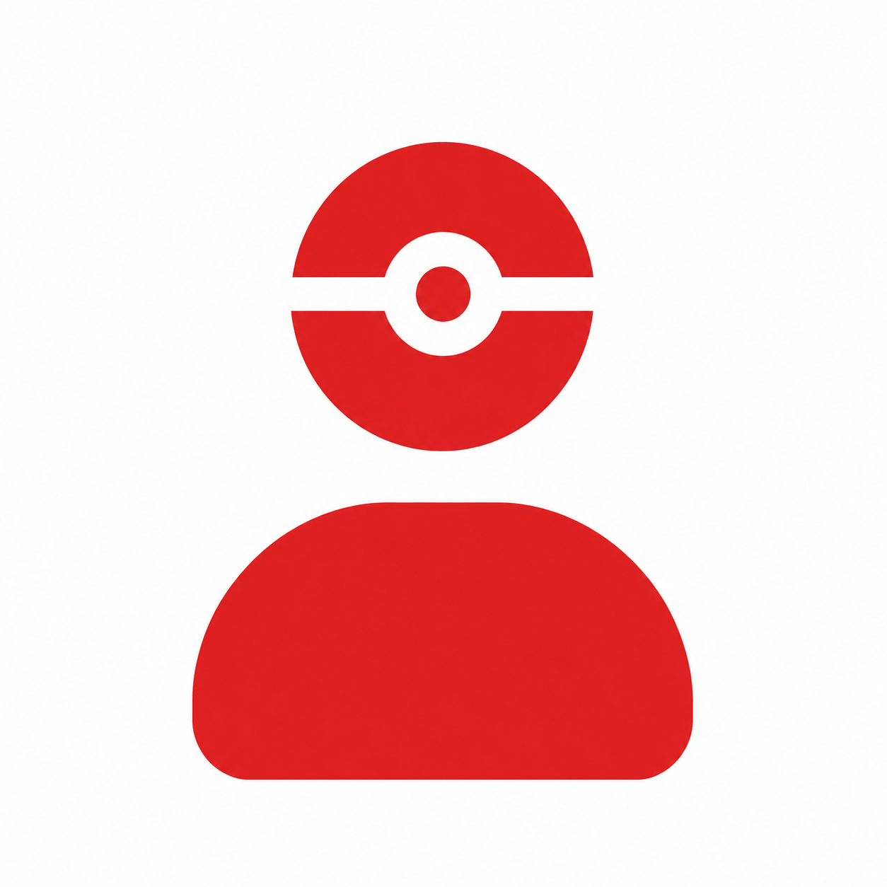

Conheça o League Scout, a plataforma dedicada à organização e ao registro dos
líderes de ginásio da região de Unova.
Líderes de Ginásio
Conheça os líderes que comandam os ginásios da região de Unova.

Sou Edivan Guedes e este é o meu projeto individual inspirado no universo de pokemon, com foco numa simulação da administração dos lideres de ginásio da região de Unova.